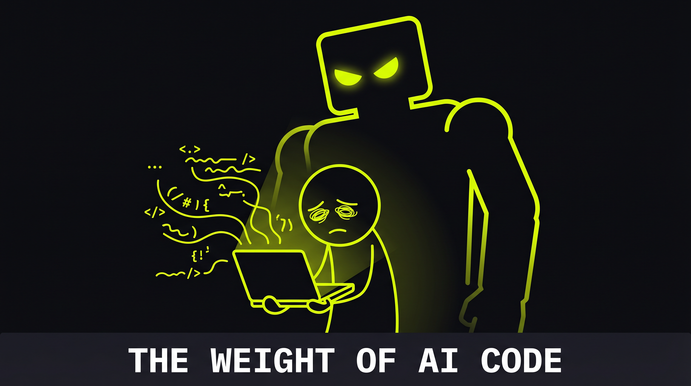
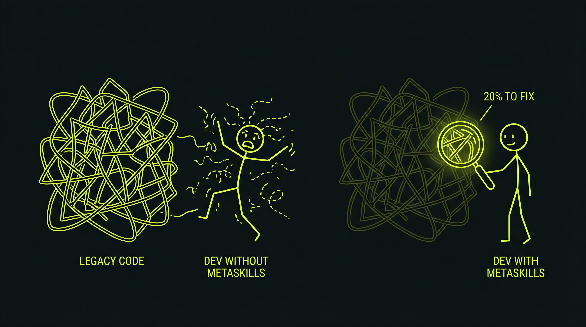
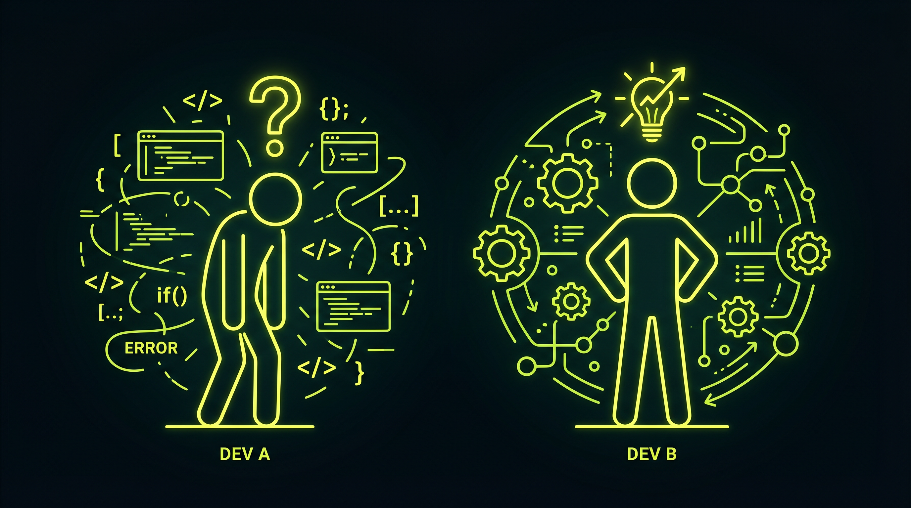
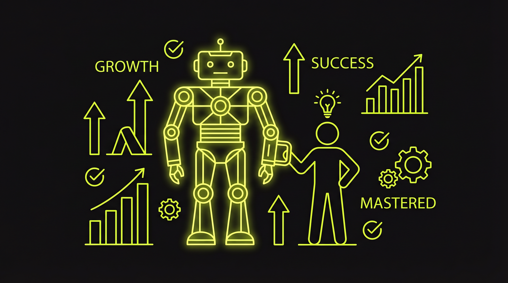

Введение: Когда всё изменилось
Представь, что ты просыпаешься в 2026 году. Ты открываешь LinkedIn, и вот что видишь:
- Фронтенд-разработчик с 5 годами опыта не может найти работу.
- Дизайнер, который раньше зарабатывал $10k в месяц, теперь конкурирует с ИИ-генератором.
- Аналитик, который знал все инструменты, оказался вытеснен нейросетью, которая делает его работу в 10 раз быстрее.
Звучит как апокалипсис? Может быть. Но это не конец истории.
Есть люди, которые процветают в 2026 году. И у них есть одно общее качество: они не пытаются конкурировать с ИИ в его игре. Они играют в совсем другую игру.
Часть 1: Что произошло с хард-скиллами?
Хард-скиллы — это новое масло
В 2015 году, если ты умел кодить на Python, ты был в цене. В 2020 году — тоже. В 2024 году начало меняться. А в 2026 году произошло то, что многие предсказывали, но не хотели видеть:
Хард-скиллы перестали быть редкостью. Они стали коммодити.
Почему? Потому что ИИ научился делать то, что раньше требовало 10 лет обучения, за 10 минут.
- ChatGPT пишет код, который работает.
- Midjourney рисует дизайн, который нравится клиентам.
- Claude анализирует данные и выдает insights лучше, чем junior аналитик.
Это не значит, что хард-скиллы бесполезны. Это значит, что их недостаточно.

Давление ИИ на традиционные хард-скиллы растёт экспоненциально
Парадокс 2026 года
Вот в чём парадокс: никогда в истории не было так много людей, которые могут писать код, рисовать, писать тексты. Но никогда не было так мало людей, которые знают, почему они это делают и как это использовать.
Представь двух разработчиков:
Разработчик A: Знает Python, React, Docker, Kubernetes. Может написать код для чего угодно. Но когда его спрашивают: "Почему ты выбрал именно этот подход?" — он теряется. Он просто делает то, что ему сказали.
Разработчик B: Знает те же технологии, но кроме того, он понимает, как люди принимают решения. Он видит, почему его коллеги сопротивляются переходу на новый стек. Он может убедить менеджера, что его идея стоит времени команды. Он знает, как учиться новому в 10 раз быстрее.
Кого наймут в 2026 году? Правильно — Разработчика B.
Часть 2: Метанавыки — новая валюта
Что такое метанавыки?
Метанавыки — это навыки управления собственным мышлением. Это не "коммуникация" и не "лидерство" в классическом смысле. Это:
- Критическое мышление: Способность видеть, когда ты ошибаешься, и менять своё мнение.
- Метакогниция: Понимание собственных когнитивных ошибок и предубеждений.
- Адаптивность: Способность учиться в условиях неопределённости.
- Эмоциональный интеллект: Понимание, как твои эмоции влияют на решения.
- Системное мышление: Видение связей между явлениями.
Это не "мягкие навыки" в смысле "будь добрее". Это жёсткие навыки управления собственным мозгом.
Метанавыки — это архитектура твоего мышления
Почему метанавыки не могут автоматизировать?
ИИ может написать код. ИИ может нарисовать картинку. Но ИИ не может за тебя решить, какой код писать и какую картинку рисовать.
ИИ — это инструмент. Метанавыки — это умение выбирать, какой инструмент использовать, и когда его использование — это ошибка.
Вот пример из реальной жизни:
Компания нанимает разработчика для переписания легасси-кода. Первый разработчик (без метанавыков) начинает переписывать всё с нуля, используя самые новые технологии. Через 6 месяцев проект в беде: он потратил 10 раз больше времени, чем планировалось, и новый код работает медленнее старого.
Второй разработчик (с метанавыками) сначала спрашивает: "Почему мы это делаем? Что сломано? Что работает хорошо?" Он видит, что 80% кода работает отлично, и переписывает только 20%. Проект завершается в срок и в бюджет.
Разница? Второй разработчик использовал критическое мышление и системное видение. Первый просто делал то, что казалось "правильным".

Системное мышление спасает проекты (и карьеры)
Часть 3: Как это выглядит на практике?
На собеседовании
В 2026 году собеседование выглядит так:
Интервьюер: "Расскажи о проекте, где ты допустил ошибку."
Кандидат без метанавыков: "Ну, я выбрал неправильный фреймворк. Я не знал, что он медленный."
Кандидат с метанавыками: "Я выбрал фреймворк, потому что все его использовали. Я не остановился, чтобы спросить себя: нужен ли мне именно этот фреймворк для этой задачи? Позже я понял, что это была ошибка подтверждения — я искал информацию, которая подтверждала мой выбор, и игнорировал информацию, которая его опровергала. Теперь я всегда спрашиваю себя: какие предположения я делаю? И какие доказательства могут их опровергнуть?"
Кого наймут?

На собеседовании в 2026 году выигрывает тот, кто видит свои ошибки
На работе
Сценарий: Менеджер говорит: "Нам нужно срочно переписать API на GraphQL."
Разработчик без метанавыков: "Окей, начинаю писать."
Разработчик с метанавыками: "Давай разберёмся. Почему GraphQL? Что сломано в текущем REST API? Сколько времени это займёт? Какой будет ROI? Может быть, проблема не в GraphQL, а в чём-то другом?"
Через неделю выясняется, что проблема была не в API, а в том, что фронтенд-разработчики не знали, как использовать REST правильно. Переписывание на GraphQL было бы пустой тратой времени.
Кто спас компанию от убытков? Разработчик с метанавыками.
Часть 4: Статистика 2026 года
Вот что говорят данные:
- LinkedIn Workplace Learning Report 2026: 94% компаний ищут сотрудников с "критическим мышлением" как топ-1 навык. Это выше, чем спрос на Python.
- McKinsey Future of Work 2026: Компании готовы платить на 30% больше за сотрудников, которые могут учиться и адаптироваться, чем за сотрудников с узкоспециализированными навыками.
- World Economic Forum 2026: Метанавыки входят в топ-5 навыков, которые не могут быть автоматизированы в течение следующих 10 лет.
Но вот парадокс: только 15% компаний активно развивают метанавыки у своих сотрудников. Остальные ждут, что люди "как-то сами этому научатся".
Часть 5: Как начать?
Шаг 1: Осознание
Первый шаг — понять, что ты не видишь собственные ошибки. Это называется "слепое пятно". Все люди его имеют. Вопрос в том, готов ли ты его видеть.
Шаг 2: Практика
Метанавыки не развиваются от чтения статей. Они развиваются от практики. Вот что можно делать:
- Веди дневник ошибок: Каждый день записывай одну ошибку, которую ты допустил, и почему ты её допустил. Через месяц ты начнёшь видеть паттерны.
- Спрашивай "почему" 5 раз: Когда ты принимаешь решение, спроси себя "почему" 5 раз. Это помогает увидеть предположения.
- Ищи противоположные мнения: Активно ищи людей, которые не согласны с тобой. Это помогает развить критическое мышление.
Шаг 3: Обучение
Если ты хочешь ускорить процесс, есть структурированные курсы. Но не все они одинаковые. Ищи те, которые:
- Основаны на нейробиологии, а не на "позитивном мышлении".
- Дают практические инструменты, а не теорию.
- Фокусируются на твоей конкретной области (кодинг, дизайн, менеджмент), а не на общих фразах.

В 2026 году ИИ — это не враг, а инструмент. Вопрос только в том, кто им управляет
Заключение: Твой выбор
В 2026 году у тебя есть два пути:
Путь 1: Конкурировать с ИИ в его игре. Учить новые технологии каждый год. Надеяться, что ты будешь быстрее, чем нейросеть. Это проигрышный путь.
Путь 2: Развивать метанавыки. Учиться видеть, когда ты ошибаешься. Понимать, как люди принимают решения. Быть адаптивным. Это путь к стабильности и росту.
ИИ — это не враг. Это инструмент. Вопрос только в том, кто будет им управлять.
В 2026 году те, кто управляет ИИ, зарабатывают в 10 раз больше, чем те, кто конкурирует с ИИ.
Выбор за тобой.
Начни развивать метанавыки прямо сейчас
Попробуй наш бесплатный курс "Школа метанавыков DISTILL". 12 уроков по нейробиологии, без эзотерики, с практическими инструментами для управления мышлением и вниманием.
Начать бесплатно →